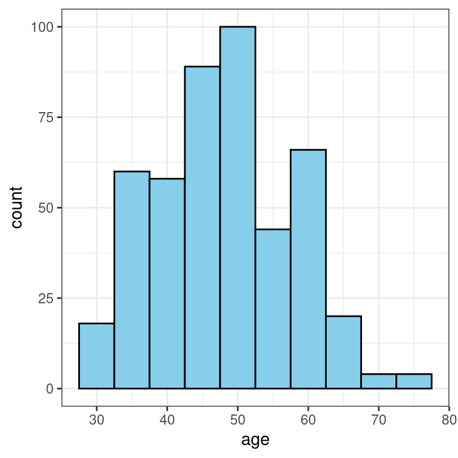
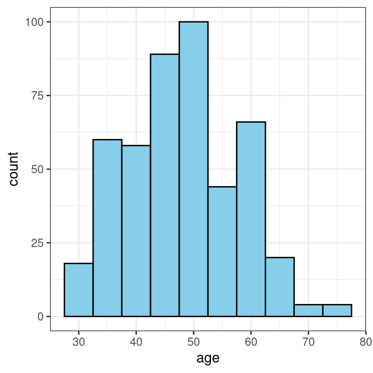
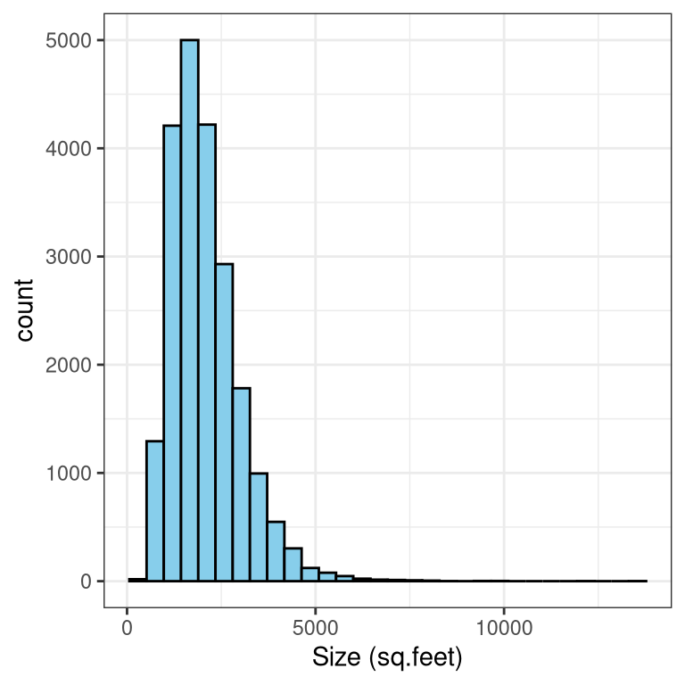
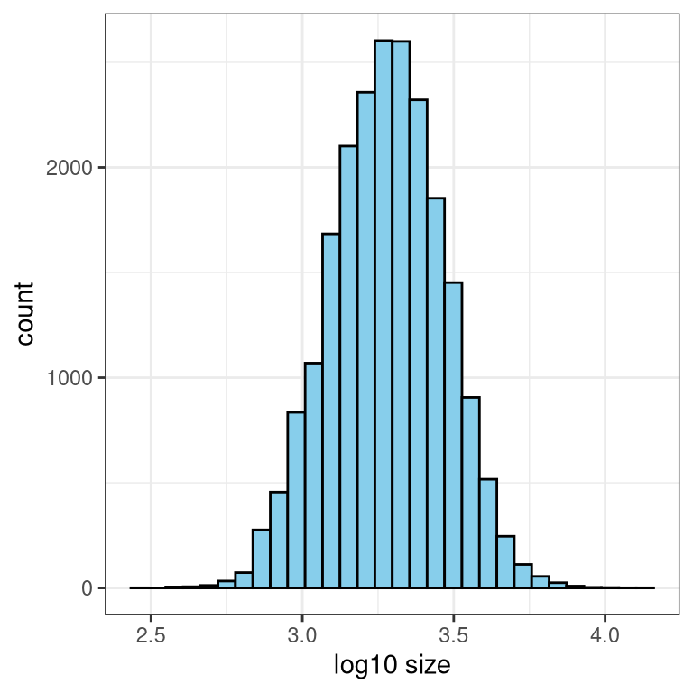
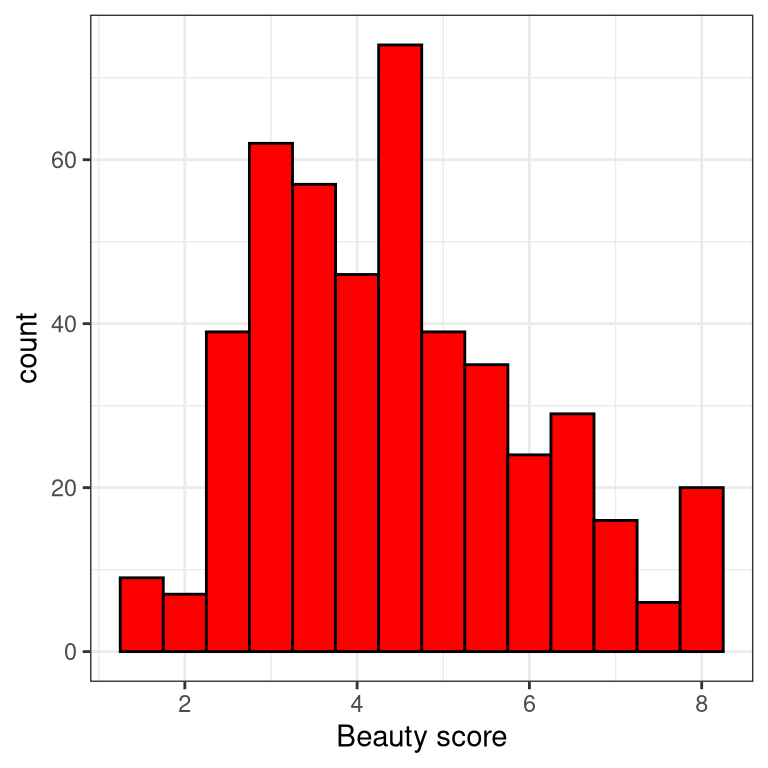
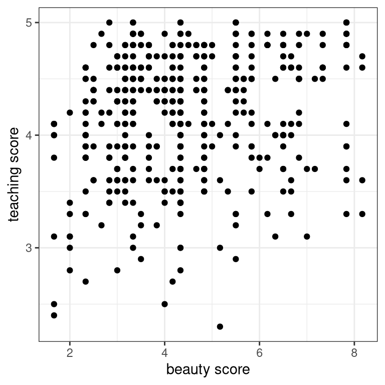
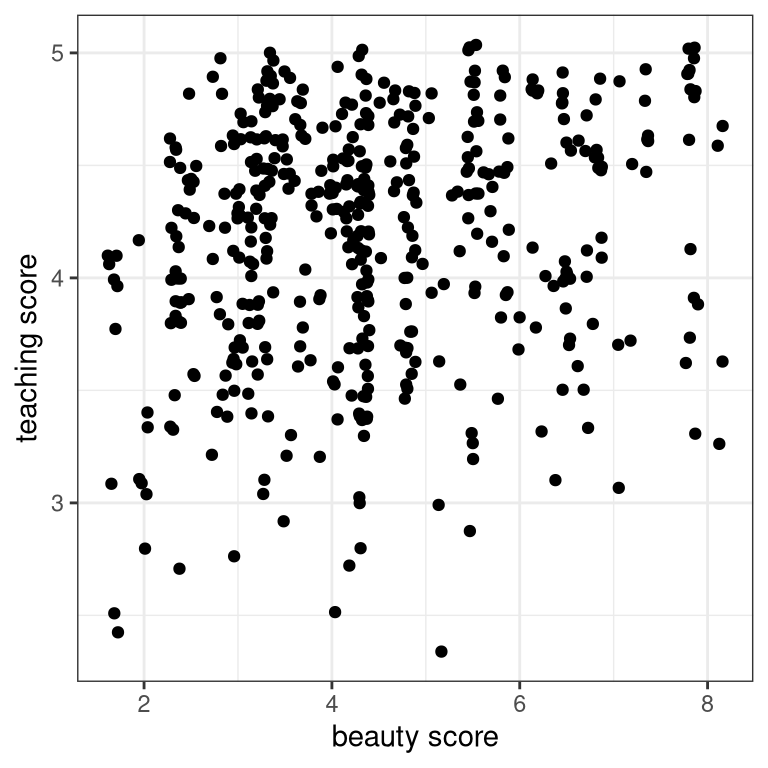
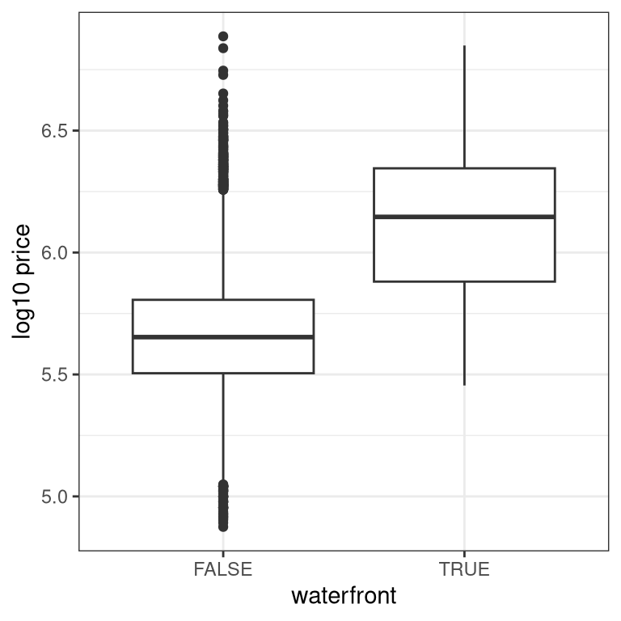
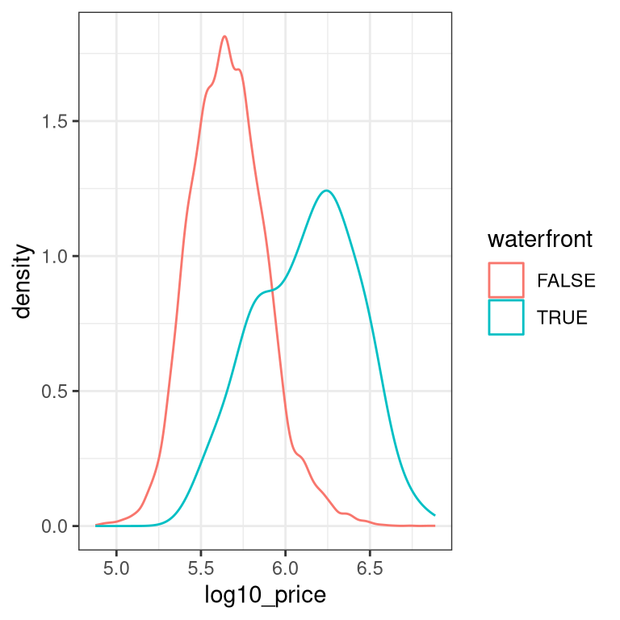

# Load packages
library(moderndive)
library(ggplot2)
# Plot the histogram
ggplot(evals, aes(x = age)) +
geom_histogram(binwidth = 5, fill = "skyblue", color = "black") +
labs(x = "age", y = "count") +
theme_bw()
This chapter will introduce you to some background theory and terminology for modeling, in particular, the general modeling framework, the difference between modeling for explanation and modeling for prediction, and the modeling problem. Furthermore, you’ll start performing your first exploratory data analysis, a crucial first step before any formal modeling.
Let’s perform an exploratory data analysis (EDA) of the numerical explanatory variable age. You should always perform an exploratory analysis of your variables before any formal modeling. This will give you a sense of your variable’s distributions, any outliers, and any patterns that might be useful when constructing your eventual model.
Use the evals data set from the moderndive package along with ggplot2 to create a histogram of age with bins in 5 year increments.
Label the x axis with age and the y axis with count.
# Load packages
library(moderndive)
library(ggplot2)
# Plot the histogram
ggplot(evals, aes(x = age)) +
geom_histogram(binwidth = 5, fill = "skyblue", color = "black") +
labs(x = "age", y = "count") +
theme_bw()
Let’s continue our exploratory data analysis of the numerical explanatory variable age by computing summary statistics. Summary statistics take many values and summarize them with a single value. Let’s compute three such values using dplyr data wrangling: mean (AKA the average), the median (the middle value), and the standard deviation (a measure of spread/variation).
age.# Load packages
library(moderndive)
library(dplyr)
# Compute summary stats
evals |>
summarize(mean_age = mean(age),
median_age = median(age),
sd_age = sd(age),
iqr = IQR(age),
e1071::skewness(age)) |>
kable()| mean_age | median_age | sd_age | iqr | e1071::skewness(age) |
|---|---|---|---|---|
| 48.36501 | 48 | 9.802742 | 15 | 0.0483567 |
Let’s create an exploratory visualization of the predictor variable reflecting the size of houses: sqft_living the square footage of living space where 1 sq.foot \(\approx\) 0.1 sq.meter.
After plotting the histogram, what can you say about the distribution of the variable sqft_living?
Create a histogram of sqft_living using the house_prices data set from the moderndive package.
Label the x axis with "Size (sq.feet)" and the y axis with "count".
# Plot the histogram
ggplot(house_prices, aes(x = sqft_living)) +
geom_histogram(fill = "skyblue", color = "black") +
labs(x = "Size (sq.feet)", y = "count") +
theme_bw()
You just saw that the predictor variable sqft_living is right-skewed and hence a log base 10 transformation is warranted to unskew it. Just as we transformed the outcome variable price to create log10_price in the video, let’s do the same for sqft_living.
mutate() function from dplyr, create a new column log10_size and assign it to house_prices_2 by applying a log10() transformation to sqft_living.# Add log10_size
house_prices_2 <- house_prices |>
mutate(log10_size = log10(sqft_living))log10() transformation by creating a histogram of the new variable log10_size.# Plot the histogram
ggplot(house_prices_2, aes(x = log10_size)) +
geom_histogram(fill = "skyblue", color = "black") +
labs(x = "log10 size", y = "count") +
theme_bw()
Notice how the distribution is much less skewed in Figure 1.1. Going forward, you will use this new transformed variable to represent the size of houses.
The researchers in the UT Austin created a “beauty score” by asking a panel of 6 students to rate the “beauty” of all 463 instructors. They were interested in studying any possible impact of “beauty” of teaching evaluation scores. Let’s do an EDA of this variable and its relationship with teaching score. The data are stored in the evals data frame from the moderndive package.
From now on, assume that ggplot2, dplyr, and moderndive are all available in your workspace unless you’re told otherwise.
bty_avg “beauty scores” with bins of size 0.5.### Plot the histogram
ggplot(evals, aes(x = bty_avg)) +
geom_histogram(color = "black", fill = "red", binwidth = 0.5) +
labs(x = "Beauty score", y = "count") +
theme_bw()
score on the y-axis and the explanatory variable bty_avg on the x-axis.# Scatterplot
ggplot(evals, aes(x = bty_avg, y = score)) +
geom_point() +
labs(x = "beauty score", y = "teaching score") +
theme_bw()
# Jitter plot
ggplot(evals, aes(x = bty_avg, y = score)) +
geom_jitter() +
labs(x = "beauty score", y = "teaching score") +
theme_bw()
It seems the original scatterplot did suffer from overplotting since the jittered scatterplot reveals many originally hidden points. Most bty_avg scores range from 2-8, with 5 being about the center.
Let’s numerically summarize the relationship between teaching score and beauty score bty_avg using the correlation coefficient. Based on this, what can you say about the relationship between these two variables?
score and bty_avg.# Compute correlation
evals %>%
summarize(correlation = cor(score, bty_avg)) -> tr
tr# A tibble: 1 × 1
correlation
<dbl>
1 0.187Highlight the appropriate answer:
score and bty_avg are strongly negatively associated.
score and bty_avg are weakly negatively associated.
score and bty_avg are weakly positively associated.
score and bty_avg are strongly positively associated.
While there seems to be a positive relationship, 0.187 is still a long ways from 1, so the correlation is only weakly positive.
Let’s now perform an exploratory data analysis of the relationship between log10_price, the log base 10 house price, and the binary variable waterfront. Let’s look at the raw values of waterfront and then visualize their relationship.
The column log10_price has been added for you in the house_prices dataset.
house_prices |>
mutate(log10_price = log10(price)) -> house_pricesglimpse() to view the structure of only two columns: log10_price and waterfront.# View the structure of log10_price and waterfront
house_prices |>
select(log10_price, waterfront) |>
glimpse()Rows: 21,613
Columns: 2
$ log10_price <dbl> 5.346157, 5.730782, 5.255273, 5.781037, 5.707570, 6.088136…
$ waterfront <lgl> FALSE, FALSE, FALSE, FALSE, FALSE, FALSE, FALSE, FALSE, FA…waterfront and log10_price using an appropriate geom_* function. Remember that waterfront is categorical.# Plot
ggplot(house_prices, aes(x = waterfront, y = log10_price)) +
geom_boxplot() +
labs(x = "waterfront", y = "log10 price") +
theme_bw()
Look at that boxplot! Houses that have a view of the waterfront tend to be MUCH more expensive as evidenced by the much higher log10 prices!
ggplot(data = house_prices, aes(x = log10_price, color = waterfront)) +
geom_density() +
theme_bw()
You just saw that houses with a view of the waterfront tend to be much more expensive. But by how much? Let’s compute group means of log10_price, convert them back to dollar units, and compare!
log10_price and the count of houses in each level of waterfront# Calculate stats
house_prices |>
group_by(waterfront) |>
summarize(mean_log10_price = mean(log10_price), n = n()) -> hp
hp |>
kable()| waterfront | mean_log10_price | n |
|---|---|---|
| FALSE | 5.663114 | 21450 |
| TRUE | 6.124689 | 163 |
log10_price, return “good” predicted house prices in the original units of US dollars.# Prediction of price for houses with view
10^(6.12)[1] 131825710^hp$mean_log10_price[1][1] 460377.2# Prediction of price for houses without view
10^(5.66)[1] 457088.210^hp$mean_log10_price[2][1] 1332567## Or
house_prices |>
group_by(waterfront) |>
summarize(mean_log10_price = mean(log10_price), n = n()) |>
mutate(pred_price = 10^mean_log10_price) -> hp2
hp2 |>
kable()| waterfront | mean_log10_price | n | pred_price |
|---|---|---|---|
| FALSE | 5.663114 | 21450 | 460377.2 |
| TRUE | 6.124689 | 163 | 1332566.9 |
Most houses don’t have a view of the waterfront (\(n = 21,450\)), but those that do (\(n =163\)) have a MUCH higher predicted price. Look at that difference! $460,377 versus $1,332,567! In the upcoming Chapter 2 on basic regression, we’ll build on such intuition and construct our first formal explanatory and predictive models using basic regression!